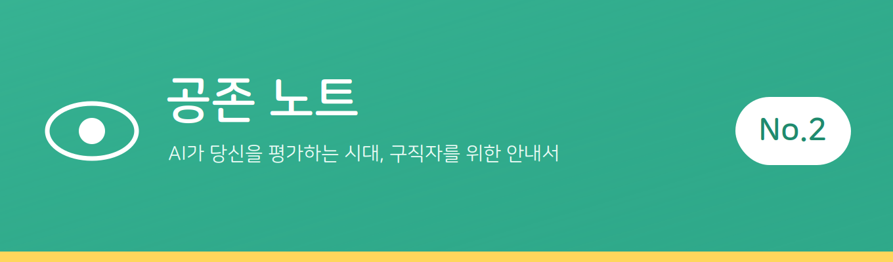
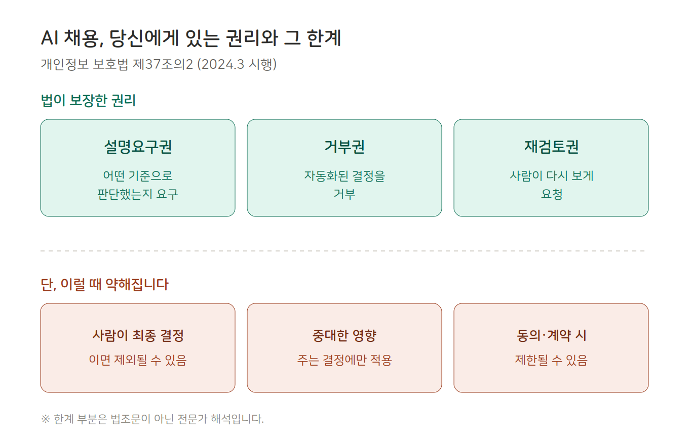
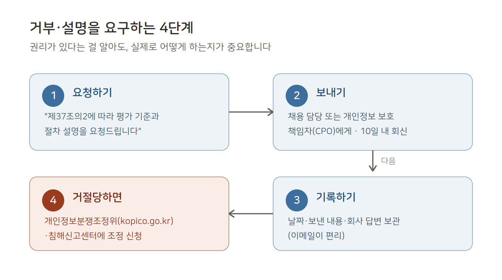

AI 면접, 거부할 권리가 있을까?
지난 호에서 우리는 AI 역량검사가 무엇을 보는지 정리했습니다. 그런데 그걸 알고 나면, 다음 질문이 따라옵니다.
"이거, 거부할 수는 없나?"
카메라 앞에 앉기 싫어도, 게임 같은 검사가 나를 제대로 평가하는 건지 의심스러워도 — 우리는 대체로 그냥 응합니다. 거부하면 탈락일 것 같으니까요. 그런데 더 근본적인 문제는, 거부해도 되는지, 그런 권리가 있는지조차 모른다는 데 있습니다.
오늘은 그걸 정리합니다.
[결론부터 — 권리는 있습니다. 단, 조건부입니다.]
많은 사람이 모르지만, 법에는 이미 관련 권리가 있습니다. 그런데 그게 'AI 기본법'이 아니라 개인정보 보호법에 있습니다.
개인정보 보호법 제37조의2는 2024년 3월부터 시행 중이며, 세 가지를 정하고 있습니다.
· 거부권: 완전히 자동화된 시스템(AI 포함)이 내린 결정이 내 권리·의무에 중대한 영향을 미친다면, 그 결정을 거부할 수 있습니다.
· 설명요구권: 자동화된 결정을 받았다면, 어떤 기준으로 판단했는지 설명을 요구할 수 있습니다.
· 처리자의 의무: 내가 거부하거나 설명을 요구하면, 회사는 정당한 사유가 없는 한 자동화 결정을 적용하지 않거나, 사람이 개입해 다시 처리해야 합니다.
즉 법적으로는, AI가 나를 평가한 결정에 대해 "설명해달라", "사람이 다시 봐달라"고 요구할 근거가 이미 있는 셈입니다.
[그런데 왜 '있는데 없는 것처럼' 느껴질까]

여기서부터가 중요합니다. 이 권리에는 분명한 한계가 있고, 이 부분은 법조문 자체가 아니라 전문가들의 해석이라는 점을 먼저 밝혀둡니다.
· '완전히' 자동화된 결정에만 적용됩니다. 회사가 "AI가 1차로 거르고, 최종 결정은 사람이 한다"고 하면, 거부권 대상에서 빠질 수 있습니다. 실제로 많은 기업이 이 구조를 택하고 있습니다.
· '중대한 영향'을 주는 결정에만 적용됩니다. 중간 점수화나 순위 매기기 단계에는 권리가 미치지 않고, 최종 결정에만 적용된다고 해석됩니다.
· 예외 사유가 있습니다. 내가 동의했거나, 계약 이행에 필요하거나, 법적 근거가 있으면 거부권이 제한됩니다. 지원 과정에서 형식적으로 받는 동의가 이 권리를 무력화할 수 있다는 우려도 있습니다.
· 거부해도, 사람이 같은 결정을 내릴 수 있습니다. 거부권은 "사람이 다시 보게 할" 권리이지, "합격시켜라"는 권리가 아닙니다.
전문가들은 이런 이유로, 한국의 이 권리가 유럽(GDPR)에 비해 상당히 약하다고 평가합니다.
정리하면 이렇습니다. 권리는 분명히 있지만, 회사가 "사람이 최종 결정한다"고 말하는 순간 실효성이 크게 약해지는 구조입니다.
[그럼 지금, 할 수 있는 것]
한계가 있다고 해서 아무것도 못 하는 건 아닙니다. 순서대로 정리했습니다.

1단계. 요청하기 — 이렇게 쓰면 됩니다.
막연히 "설명해달라"보다, 근거를 들어 요청하면 회사도 무시하기 어렵습니다. 아래 문장을 그대로 활용하셔도 됩니다.
"귀사의 OO 전형에서 AI 등 자동화된 시스템이 평가에 사용되었는지 확인 부탁드립니다. 사용되었다면, 개인정보 보호법 제37조의2에 따라 그 평가 기준과 절차에 대한 설명을 요청드립니다."
2단계. 어디로 보내나.
회사의 채용 담당 창구, 또는 개인정보 처리방침에 명시된 개인정보 보호책임자(CPO) 연락처로 보냅니다. 방법은 서면·이메일·팩스 모두 가능하며, 회사는 원칙적으로 10일 이내에 조치 결과를 알려야 합니다.
3단계. 기록을 남기세요.
요청한 날짜, 보낸 내용, 회사의 답변을 남겨두세요. 이메일이 편리합니다. 나중에 문제가 생겼을 때, 이 기록이 근거가 됩니다.
4단계. 거절당하면.
회사가 정당한 사유 없이 응하지 않으면, 개인정보분쟁조정위원회(kopico.go.kr)나 개인정보침해신고센터에 상담·분쟁조정을 신청할 수 있습니다. 참고로, 회사가 이 의무를 제대로 이행하지 않으면 3천만원 이하의 과태료 대상이 될 수 있습니다.
다만 이 모든 절차가 "합격을 보장"하는 것은 아닙니다. 우리가 확보하는 것은 결과가 아니라, 최소한 어떻게 평가받았는지 알고, 사람의 재검토를 요구할 수 있는 통로입니다.
[맺음말]
거부할 권리가 있느냐는 질문에, 이제 이렇게 답할 수 있습니다. "있다. 다만 지금은, 회사가 어떻게 설계했느냐에 따라 크게 달라진다."
완벽한 권리는 아닙니다. 하지만 권리가 있다는 사실을 아는 것과 모르는 것은 다릅니다. 최소한, 요구할 수 있다는 걸 알면 대응의 방식이 생기니까요.
참고로, 이 글은 법을 쉽게 정리한 것이지 법률 자문은 아닙니다. 실제 대응이 필요하다면 전문가의 도움을 받으세요.
다음 호에서는 'AI 역량검사, 게임은 대체 뭘 보는 걸까?'를 다룹니다. 도형 회전, n-back 같은 그 게임들이 실제로 측정하는 것을 유형별로 정리합니다.
공존 노트는, 지금의 권리가 충분한지 계속 물어야 한다고 봅니다. 있는 권리를 아는 것과, 그 권리가 제대로 작동하는지 따지는 것은 별개의 일이니까요.
이 글이 도움이 됐다면, 지금 취업을 준비하는 친구에게 공유해주세요.